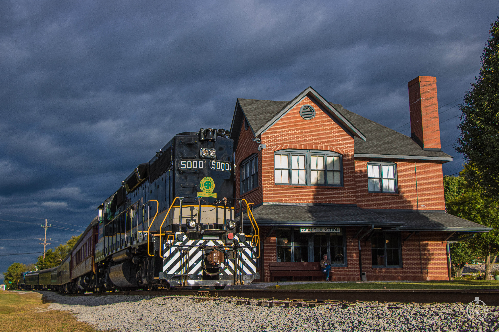
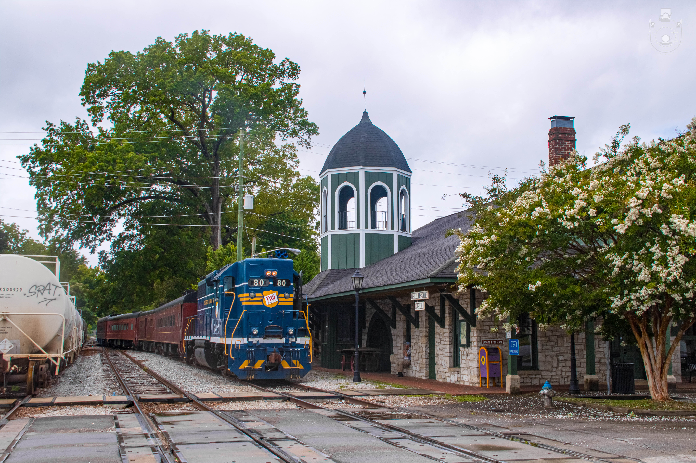

Grand Junction Station - Headquarters
Grand Junction Station serves as the primary hub of the Tennessee Valley Railroad Museum. The Depot was built in 1984 by the museum due to a need for a larger space, as the East Chattanooga Depot was too small. Located in Chattanooga, this station is where most excursions begin. It features a ticket office, gift shop, and a small museum showcasing railroad artifacts. Visitors can explore historic railcars and board trains for various scenic excursions. Grand Junction is a bustling center for rail enthusiasts and a great place to experience the nostalgia of train travel.
Chickamauga Station - Home Of "The Turn"
The Chickamauga Station provides access to the historic town of Chickamauga, Georgia. The station is original to the town and was built in the late 1800s. This station is part of the longer excursions operated by TVRM such as the Chickamauga Turn and offers passengers a chance to explore a town rich in Civil War history. Nearby attractions include the Chickamauga Battlefield and a charming downtown area with shops and restaurants. The ride to Chickamauga is a scenic journey, offering beautiful countryside views along the way.
